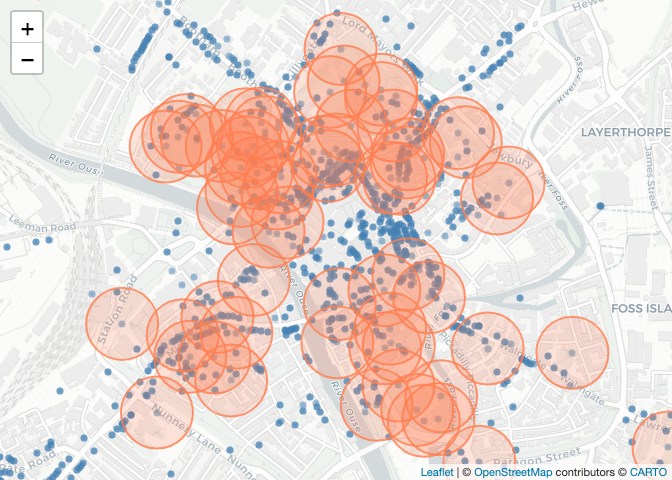

maxcovr was created to make it easy for a non expert to correctly solve the maximum covering location problem described by Church. Implementations of this problem (such as optimimum AED placement) may use commercial software such as AMPL, Gurobi, or CPLEX, which require an expensive license, or use open source licenses but not provide source code to the analysis performed (e.g., Bonnet 2014) This builds a substantial barrier to implement and reproduce these analyses.
maxcovr was created to make results easy to implement, reproduce, and extend by using:
- R, a free and open source language
- Open source solvers, glpk and lpSolve, that can be used on Linux, Windows, and OSX.
- Real-world, open source example data.
- Tidyverse principles to make it easy to use and reason with.
Please note that this project is released with a Contributor Code of Conduct. By participating in this project you agree to abide by its terms.
How to Install
Install the development version of maxcovr from r-universe:
install.packages("maxcovr", repos = c("https://njtierney.r-universe.dev", "https://cloud.r-project.org"))(Note - installing from r-universe is just like installing from CRAN, and should be faster and more convenient than installing from GitHub)
Or install using remotes:
# install.packages("remotes")
remotes::install_github("njtierney/maxcovr")Using maxcovr
Disclaimer: The following is a fictitious example using real world data.
Consider the toy example where we are playing a tower defense game and we need to place crime surveillance towers to detect crime.
We have two datasets, york, and york_crime:
-
yorkcontains listed building GPS locations in the city of York, provided by the city of york -
york_crimecontains a set of crime data from theukpolicepackage, containing crime data from September 2016.
In this game we already have a few towers built, which are placed on top of the listed buildings with a grade of I. We will call this dataset york_selected, and the remaining building locations york_unselected
library(maxcovr)
library(dplyr)
#>
#> Attaching package: 'dplyr'
#> The following objects are masked from 'package:stats':
#>
#> filter, lag
#> The following objects are masked from 'package:base':
#>
#> intersect, setdiff, setequal, union
# subset to be the places with towers built on them.
york_selected <- york %>% filter(grade == "I")
york_unselected <- york %>% filter(grade != "I")The purpose of the game is to build towers in places so that they are within 100m of crime. We are going to use the crime data that we have to help us choose ideal locations to place towers.
This can be illustrated with the following graphic, where the red circles indicate the current coverage of the building locations, so those blue crimes within the circles are within the coverage.
library(leaflet)
leaflet() %>%
addCircleMarkers(data = york,
radius = 1,
color = "steelblue") %>%
addCircles(data = york_selected,
radius = 100,
stroke = TRUE,
fill = NULL,
opacity = 0.8,
weight = 2,
color = "coral") %>%
addProviderTiles("CartoDB.Positron") %>%
setView(lng = median(york$long),
lat = median(york$lat),
zoom = 15)
#> Assuming "long" and "lat" are longitude and latitude, respectively
#> Assuming "long" and "lat" are longitude and latitude, respectively
Currently the coverage looks alright, but let’s verify the coverage using the nearest function. nearest takes two dataframes and returns the nearest lat/long coords from the first dataframe to the second dataframe, along with the distances between them and the appropriate columns from the building dataframe.
dat_dist <- york_selected %>% nearest(york_crime)
head(dat_dist)
#> # A tibble: 6 × 22
#> to_id nearest_id distance category persistent_id date lat_to long_to
#> <dbl> <dbl> <dbl> <chr> <chr> <chr> <dbl> <dbl>
#> 1 1 66 166. anti-social-beha… 62299914865f… 2016… 54.0 -1.08
#> 2 2 48 2087. anti-social-beha… 4e34f53d247f… 2016… 54.0 -1.12
#> 3 3 55 68.2 anti-social-beha… 2a0062f3dfac… 2016… 54.0 -1.08
#> 4 4 11 286. anti-social-beha… eb53e09ae46a… 2016… 54.0 -1.09
#> 5 5 25 536. anti-social-beha… 6139f131b724… 2016… 54.0 -1.08
#> 6 6 20 160. anti-social-beha… d8de26d5af47… 2016… 54.0 -1.08
#> # ℹ 14 more variables: street_id <chr>, street_name <chr>, context <chr>,
#> # id <chr>, location_type <chr>, location_subtype <chr>,
#> # outcome_status <chr>, long_nearest <dbl>, lat_nearest <dbl>,
#> # object_id <int>, desig_id <chr>, pref_ref <int>, name <chr>, grade <chr>You can instead return a dataframe which has every building in the rows, and the nearest crime to the building, by simply changing the order.
dat_dist_bldg <- york_crime %>% nearest(york_selected)
head(dat_dist_bldg)
#> # A tibble: 6 × 22
#> to_id nearest_id distance long_to lat_to object_id desig_id pref_ref name
#> <dbl> <dbl> <dbl> <dbl> <dbl> <int> <chr> <int> <chr>
#> 1 1 33 36.0 -1.09 54.0 6144 DYO1195 463280 GUILDHAL…
#> 2 2 183 35.8 -1.09 54.0 6142 DYO1373 462942 BOOTHAM …
#> 3 3 503 95.3 -1.08 54.0 3463 DYO365 464845 THE NORM…
#> 4 4 273 44.3 -1.08 54.0 3461 DYO583 464427 CHURCH O…
#> 5 5 908 26.5 -1.08 54.0 3460 DYO916 463764 CUMBERLA…
#> 6 6 495 326. -1.13 54.0 3450 DYO1525 328614 CHURCH O…
#> # ℹ 13 more variables: grade <chr>, category <chr>, persistent_id <chr>,
#> # date <chr>, lat_nearest <dbl>, long_nearest <dbl>, street_id <chr>,
#> # street_name <chr>, context <chr>, id <chr>, location_type <chr>,
#> # location_subtype <chr>, outcome_status <chr>To evaluate the coverage we can use coverage. This reads as find the coverage of the york buildings (below) to the crimes. Coverage of the first thing on the second thing. Or, how many of the second thing are covered by the first thing.
coverage(york_selected, york_crime)
#> # A tibble: 1 × 7
#> distance_within n_cov n_not_cov prop_cov prop_not_cov dist_avg dist_sd
#> <dbl> <int> <int> <dbl> <dbl> <dbl> <dbl>
#> 1 100 339 1475 0.187 0.813 1400. 1597.This tells us that out of all the crime, 18.68% of it is within 100m, 339 crimes are covered, but the mean distance to the surveillance camera is 1400m.
Maximising coverage
Say then we want to add another 20 surveillance towers, but we want to use the best 20, we use max_coverage.
system.time(
# mc_20 <- max_coverage(A = dat_dist_indic,
mc_20 <- max_coverage(existing_facility = york_selected,
proposed_facility = york_unselected,
user = york_crime,
n_added = 20,
distance_cutoff = 100)
)
#> user system elapsed
#> 0.556 0.032 0.604max_coverage actually returns a dataframe of lists.
mc_20
#>
#> -------------------------------------------
#> Model Fit: maxcovr fixed location model
#> -------------------------------------------
#> model_used: max_coverage
#> existing_facility: york_selected
#> proposed_facility: york_unselected
#> user: york_crime
#> distance_cutoff: 100
#> n_added: 20
#> d_existing_user: lpSolve
#> -------------------------------------------This is handy because it means that later when you want to explore multiple n_added, say you want to explore how coverage changes for 20, 40, 60, 80, 100 n_added, then these are added as rows in the dataframe, which makes it easier to do summaries and manipulate.
Important features here of this dataframe are:
-
facility_selected: A dataframe fromproposed_facilities, containing the facilities selected by the optimisation. -
user_affected: A dataframe fromuser, that contains the users that were affected by the new optimised placement -
model_coverage: A dataframe containing summary info on the number of users covered, the percentage of coverage, and the average distance. -
existing_coverage: returns a similar summary dataframe the original coverage, fromexisting_facilities. -
summary: returns the bindedmodel_coverageandexisting_coverage. -
n_added: The number of things added -
distance_cutoff: the distance cutoff selected
One can also use map from purrr to fit many different configurations of n_added. (Future work will look into allowing n_added to take a vector of arguments).
library(purrr)
n_add_vec <- c(20, 40, 60, 80, 100)
system.time(
map_mc_model <- map_df(.x = n_add_vec,
.f = ~max_coverage(existing_facility = york_selected,
proposed_facility = york_unselected,
user = york_crime,
distance_cutoff = 100,
n_added = .))
)
#> user system elapsed
#> 1.848 0.085 1.940This returns a list of dataframes, which we can bind together like so:
map_cov_results <- bind_rows(map_mc_model$model_coverage)We can then visualise the effect on coverage:
library(ggplot2)
bind_rows(map_mc_model$existing_coverage[[1]],
map_cov_results) %>%
ggplot(aes(x = factor(n_added),
y = pct_cov)) +
geom_point() +
geom_line(group = 1) +
theme_minimal()
You can read more about the use of max_coverage, covering topics like cross validation in the vignette.
Known Issues
max_coverage()may take a bit of time to run, depending on your data size. From initial testing, if the product of the number of rows of theproposed_facilitiesandusersexceeds 100 million, it might take more than 1 minute. Of course, this may depend on the structure / complexity of your data and problem.The distances calculated in
maxcovruse haversines formula, which makes the assumption that the earth is a sphere and calculates the greater circle distance. Whilst not wholly correct, haversine is a useful approximation that is reasonable for small scale distances, where the accuracy can be within metres which is whatmaxcovrwas initially built for. In the futuremaxcovrwill use more accurate distance functions provided ingeodist, and give the user control over the distance calculation used (haversines, vincenty, cheap ruler, geodesic, etc).
Future Work
I will be focussing on making maxcovr work well within the tidyverse. This includes providing sensible standard summaries using key function verbs from broom, adding exploratory plots, improving speed using Rcpp, and allowing users to select the solver they want to use.
If you have any suggestions, please file an issue and I will get to it as soon as I can.
Code of Conduct
Please note that this project is released with a Contributor Code of Conduct.
By participating in this project you agree to abide by its terms.
Acknowledgements
Oliver Czibula, for this initial help in helping me understand the Maximum Covering Location Problem. Angelo Auricchio and Antonietta Mira for their supervision. Alessio Quaglino and Jost Reinhold for their help in implementing the first implementation of this problem in lpSolve. Martin Weiser for his suggestion for the relocation process. Matt Sutton for his very thoughtful explanations on how to interact with high level solvers, which led to implementing maxcovr in lpsolve, glpk, and gurobi. And Alex Simmons, for teaching me how to write better C++ code.